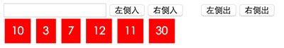

任务描述

如图，模拟一个队列，队列的每个元素是一个数字，初始队列为空
有一个input输入框，以及4个操作按钮
- 点击"左侧入"，将input中输入的数字从左侧插入队列中；
- 点击"右侧入"，将input中输入的数字从右侧插入队列中；
- 点击"左侧出"，读取并删除队列左侧第一个元素，并弹窗显示元素中数值；
- 点击"右侧出"，读取并删除队列又侧第一个元素，并弹窗显示元素中数值；
- 点击队列中任何一个元素，则该元素会被从队列中删除
任务注意事项
- 实现简单功能的同时，请仔细学习JavaScript基本语法、事件、DOM相关的知识
- 请注意代码风格的整齐、优雅
- 代码中含有必要的注释
- 示例图仅为参考，不需要完全一致
- 需要考虑数字输入的合法性
- 建议不使用任何第三方库、框架